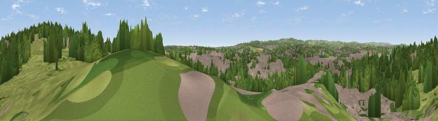

Viewpoint near Hady
#35630 in England · top 68% of its area beats it · near HadyWhere it is
The exact computed spot (SK 39425 70525). Click the marker for map links.
The view, rendered

A 360° render of this exact spot computed from the terrain model, tree cover and land cover — summer colours, afternoon light, calibrated against photographs of famous viewpoints. Real trees, hedges and buildings will differ in detail.
The panorama
Grey silhouette: terrain skyline in each direction (720 bearings, Earth curvature and refraction included). Dashed green: skyline with trees (+15 m) and buildings (+8 m) as obstacles. Blue strip: how far the ground is visible on each bearing.
Where the view opens
Wedge length = distance to the farthest visible ground on that bearing (vegetation-aware). Rings at 10, 25 and 50 km.
What fills the view
37% woodland · 36% built-up · 25% grassland · 3% cropland
Angular shares of the visible panorama (visual magnitude), not map area. Landscape diversity 0.51 (0–1 Shannon).
Key numbers
More beautiful places nearby
The staircase of upgrades: each row has a higher view potential than everything closer. Driving times are estimates from straight-line distance, calibrated against real road routing — check an actual route before setting out.
| Place | Direction | Drive | Score |
|---|---|---|---|
| Viewpoint near Tapton | N · 2 km | ~5 min | 40.1 |
| Viewpoint near Calow | E · 2 km | ~6 min | 47.6 |
| Viewpoint near Press | SSW · 5 km | ~12 min | 54.5 |
| Viewpoint near Hundall | N · 6 km | ~13 min | 59.1 |
| Viewpoint near Bolsover | E · 8 km | ~16 min | 59.2 |
| Viewpoint near Bolsover | E · 8 km | ~16 min | 60.4 |
| Viewpoint near Alton | SSW · 8 km | ~16 min | 67.0 |
| Viewpoint near Alton | SSW · 8 km | ~16 min | 67.7 |
53.23031, -1.41086 · source: screening · position refined by local search. Computed location — check access rights before visiting.